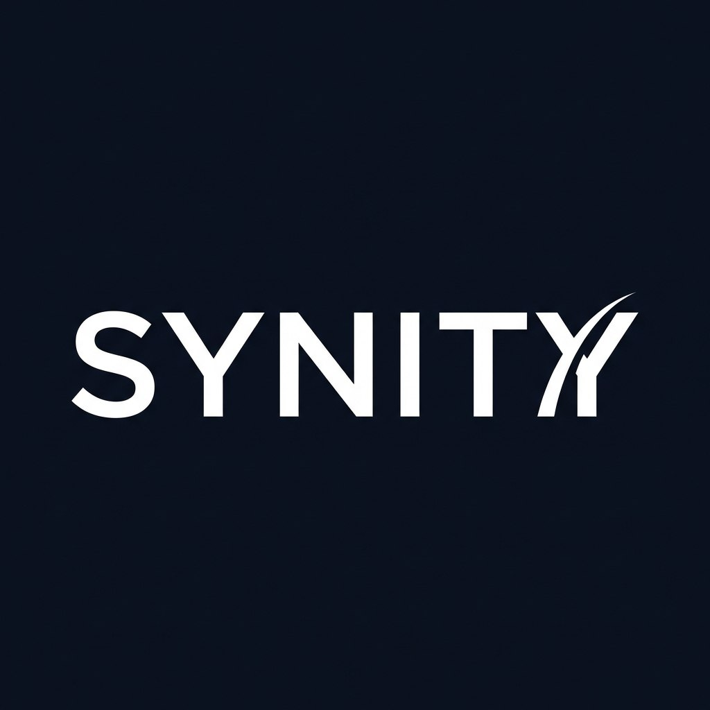
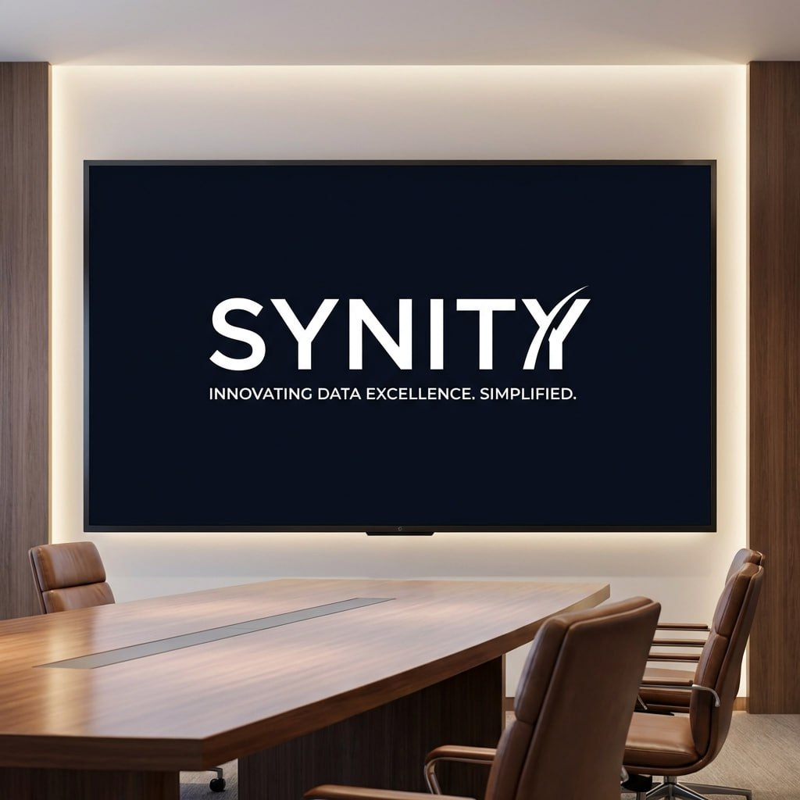
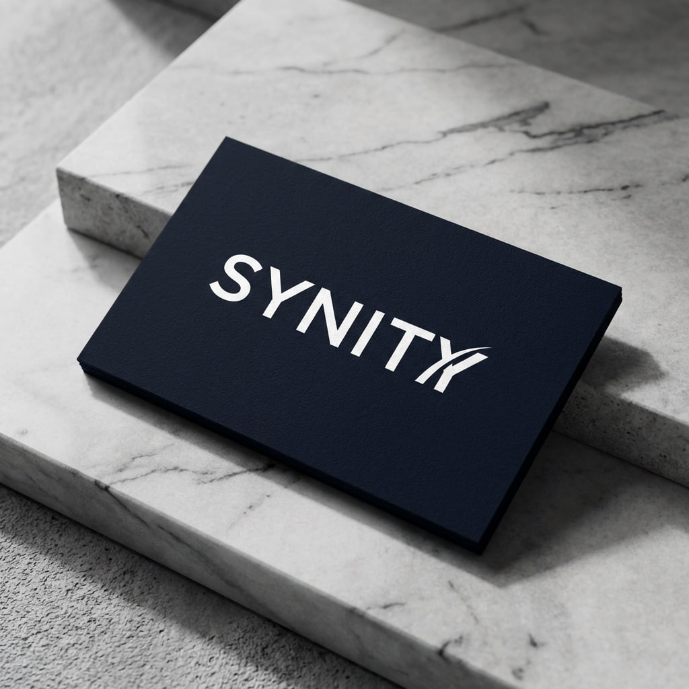
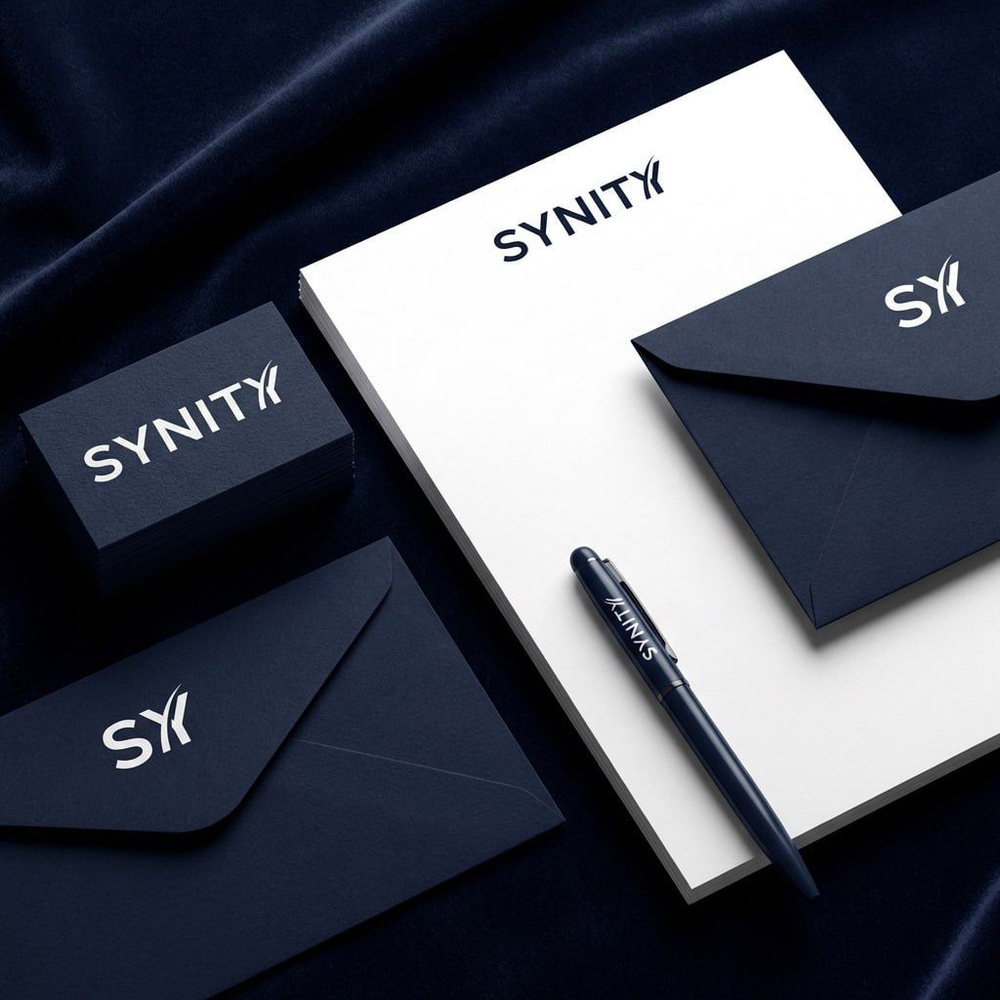
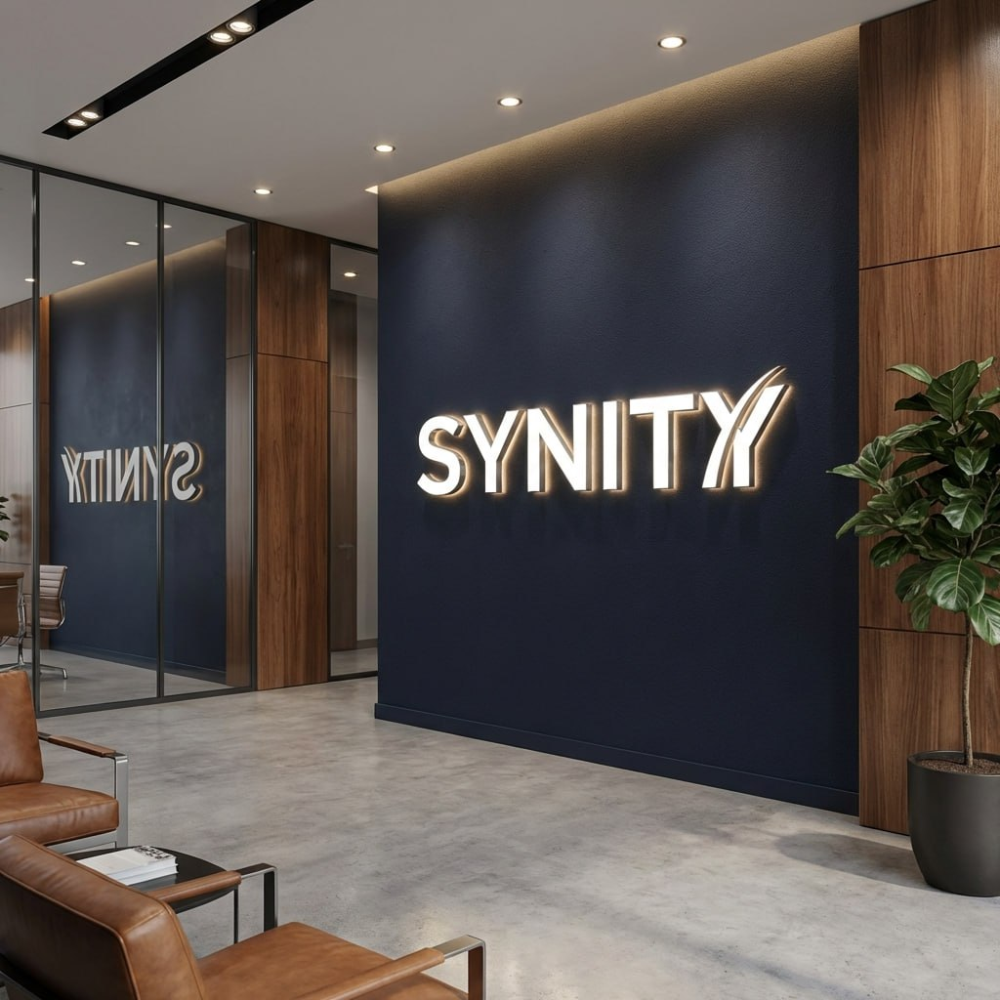
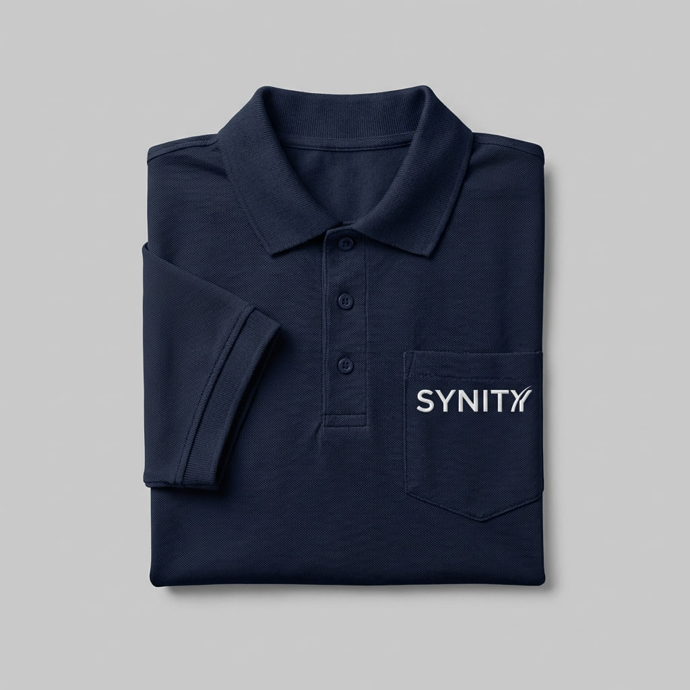
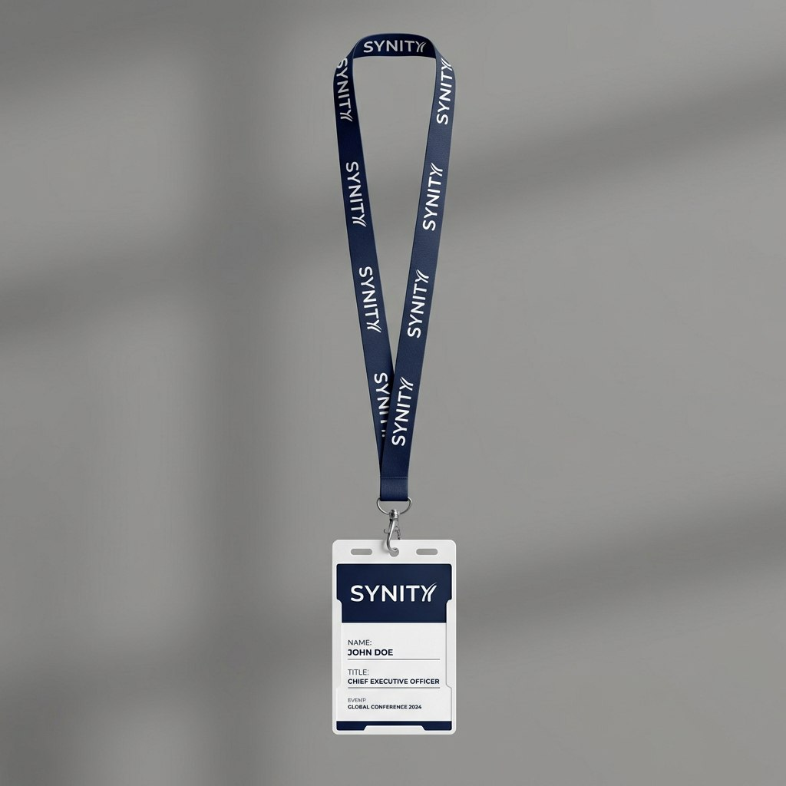
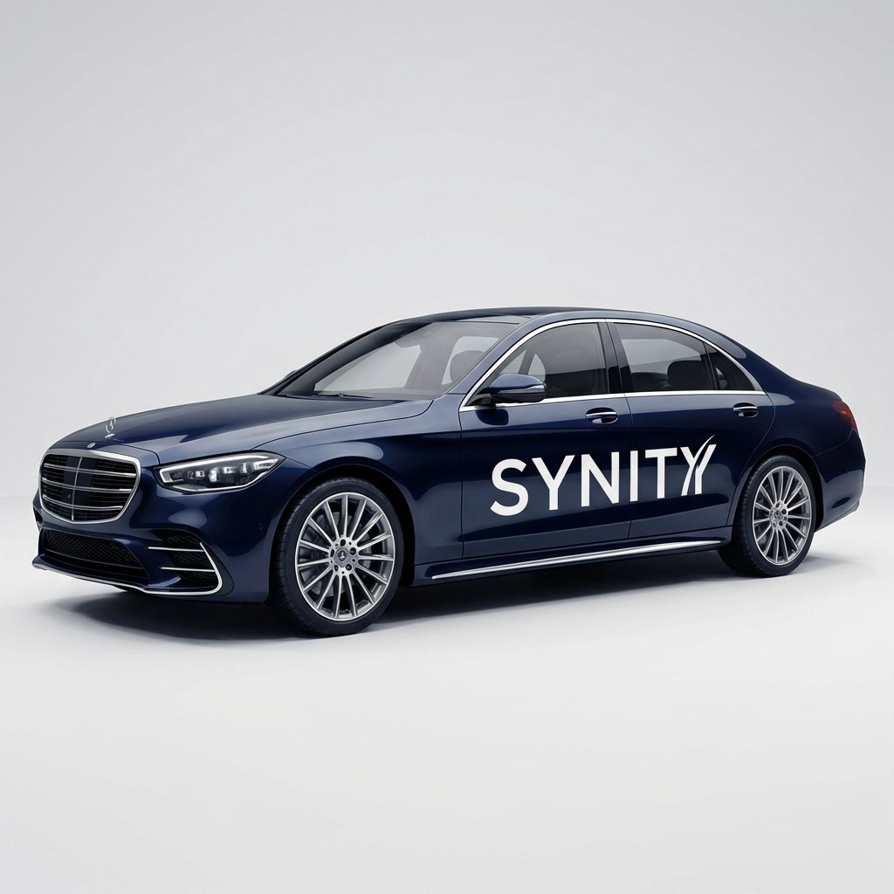

Technology Architect & Digital Transformation
Khám phá hành trình xây dựng bộ nhận dạng thương hiệu cho một công ty công nghệ tiên phong trong chuyển đổi số và kiến trúc dữ liệu.
01 — Biểu Tượng Thương Hiệu
Logo SYNITY được thiết kế với triết lý tối giản nhưng mạnh mẽ — nơi sự đồng bộ (Synchronize) gặp gỡ sự thống nhất (Unity).

Logo chính
Trên nền xanh navy sâu thẳm như vũ trụ dữ liệu vô tận, logo SYNITY tỏa sáng với typography hiện đại và thanh lịch. Chữ "Y" cuối cùng được cách điệu thành biểu tượng bay lên — đại diện cho khát vọng vươn xa và sự đột phá không ngừng trong lĩnh vực công nghệ. Mỗi đường nét đều mang thông điệp: dữ liệu không chỉ là con số, mà là câu chuyện chờ được kể.
02 — Truyền Thông Số
Từ banner social media đến màn hình LED phòng họp, SYNITY hiện diện nhất quán và đầy ấn tượng.
Cover Banner
Khi khách hàng ghé thăm profile SYNITY, họ không chỉ thấy một banner — họ thấy một lời hứa. Những đường mạch circuit điện tử chạy dọc như huyết mạch công nghệ, kết nối từ logo đến tagline "Technology Architect & Digital Transformation". Đây là tuyên ngôn thầm lặng của một đội ngũ kiến trúc sư dữ liệu.

LED Display
"Innovating Data Excellence. Simplified." — slogan hiện lên trên màn hình LED trong phòng họp sang trọng. Ánh sáng dịu nhẹ từ màn hình lan tỏa khắp không gian, tạo nên bầu không khí chuyên nghiệp nhưng không xa cách. Đây là nơi những quyết định quan trọng được đưa ra, những ý tưởng đột phá được sinh ra.
03 — Văn Phòng Phẩm
Mỗi tấm name card, mỗi bức thư, mỗi chiếc phong bì đều là một trải nghiệm cầm nắm được — nơi digital gặp gỡ vật lý.

Name Card
Đặt trên nền đá marble sang trọng, tấm name card SYNITY trở thành một tác phẩm nghệ thuật tối giản. Màu navy đậm, logo trắng tinh khiết, chất liệu giấy cao cấp với độ dày vừa phải — tất cả tạo nên cảm giác chắc chắn và đáng tin cậy. Đây không chỉ là thông tin liên hệ, mà là lời mời hợp tác.

Stationery Set
Phong bì, giấy tiêu đề, name card và bút ký — tất cả được sắp xếp trên nền vải nhung navy như một bản giao hưởng thị giác. Logo "SY" thu gọn xuất hiện tinh tế trên phong bì, trong khi logo đầy đủ trang trọng trên giấy tiêu đề. Mỗi chi tiết đều được cân nhắc kỹ lưỡng, mỗi khoảng trống đều có ý nghĩa.
04 — Không Gian Làm Việc
Văn phòng SYNITY không chỉ là nơi làm việc — đó là không gian truyền cảm hứng cho mọi cuộc chuyển đổi số.

Office Lobby
Bước vào sảnh SYNITY, khách hàng được chào đón bởi logo LED backlit tỏa sáng trên bức tường navy đặc trưng. Gỗ ấm áp kết hợp với đá marble lạnh tạo nên sự cân bằng hoàn hảo giữa công nghệ và con người. Chiếc ghế da nâu cognac, cây xanh tươi mát — tất cả nhắc nhở rằng đằng sau mọi dữ liệu luôn là câu chuyện của con người.
Meeting Room
Phòng họp SYNITY với view toàn cảnh thành phố là nơi những quyết định lớn được đưa ra. Màn hình hiển thị logo bên cạnh biểu đồ tăng trưởng — minh chứng cho sức mạnh của dữ liệu. Đội ngũ chuyên gia trong trang phục chuyên nghiệp, tập trung thảo luận, biến dữ liệu thành insight, insight thành hành động. Đây là nhịp đập của SYNITY.
05 — Đồng Phục & Phụ Kiện
Từ áo polo đến thẻ nhân viên, mỗi chi tiết đều giúp team SYNITY tự hào về nơi họ thuộc về.

Uniform
Chiếc áo polo navy với logo thêu tinh tế bên ngực trái — đơn giản nhưng nói lên tất cả. Chất vải piqué cao cấp, form dáng thoải mái cho những ngày làm việc dài. Khi mỗi thành viên khoác lên chiếc áo này, họ không chỉ mặc đồng phục — họ khoác lên niềm tự hào thuộc về một tập thể tiên phong.

Access Pass
Dây đeo lanyard với logo lặp lại theo pattern tinh tế, thẻ nhân viên thiết kế gọn gàng với thông tin rõ ràng. "Global Conference 2024" — minh chứng cho tầm vóc quốc tế của SYNITY. Mỗi chiếc thẻ là một câu chuyện cá nhân trong hành trình chung, là niềm tự hào được là một phần của đội ngũ.
06 — Phương Tiện Di Chuyển
Khi SYNITY di chuyển, cả thành phố nhìn thấy — một billboard di động của sự chuyên nghiệp.

Corporate Vehicle
Chiếc Mercedes-Benz S-Class màu navy đậm với logo SYNITY trắng bên hông — sự kết hợp hoàn hảo giữa đẳng cấp và bản sắc. Khi chiếc xe lướt qua phố phường, nó không chỉ chở người — nó truyền tải thông điệp về một công ty coi trọng chất lượng, chi tiết và sự xuất sắc trong mọi khía cạnh. Đây là cách SYNITY nói với thế giới: "Chúng tôi nghiêm túc với mọi thứ chúng tôi làm."
07 — Người Sáng Lập
"Dữ liệu không chỉ là con số. Dữ liệu là câu chuyện của doanh nghiệp bạn, là cơ hội ẩn giấu, là tương lai đang chờ được khám phá."
Đứng trước hàng trăm nhà lãnh đạo doanh nghiệp, founder của SYNITY
không chỉ chia sẻ kiến thức — ông truyền cảm hứng. Với background
trong lĩnh vực kiến trúc dữ liệu và chuyển đổi số, ông đã dẫn dắt SYNITY
từ một startup nhỏ thành đối tác đáng tin cậy của các tập đoàn lớn.
Triết lý của ông đơn giản: làm cho phức tạp trở nên đơn giản,
làm cho dữ liệu trở nên có ý nghĩa. Và mỗi ngày, đội ngũ SYNITY
đang biến triết lý đó thành hiện thực.
"Mỗi doanh nghiệp đều có tiềm năng vô hạn. Nhiệm vụ của chúng tôi là giúp họ nhìn thấy tiềm năng đó thông qua lăng kính dữ liệu."
Hình ảnh founder trên sân khấu, micro trong tay, ánh mắt tập trung —
đó là SYNITY. Không phải công ty, mà là con người. Không phải dịch vụ,
mà là sứ mệnh.
Khi ông nói về chuyển đổi số, khán giả không chỉ nghe — họ tin.
Bởi vì đằng sau mỗi lời nói là kinh nghiệm thực chiến,
là những dự án đã thay đổi cách doanh nghiệp vận hành,
là niềm đam mê không ngừng với công nghệ và con người.